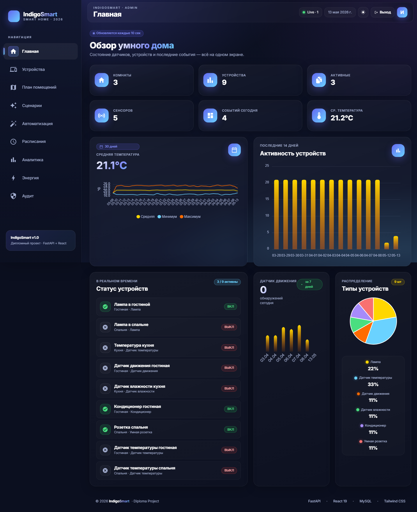
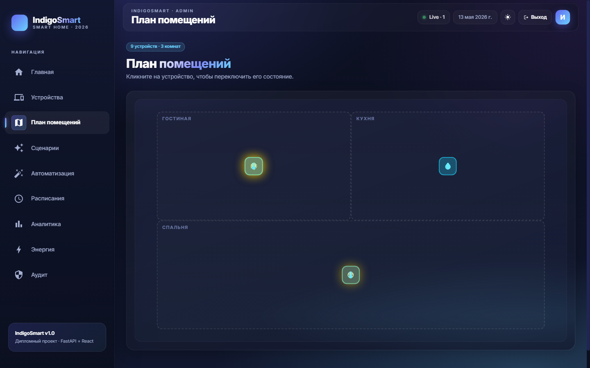
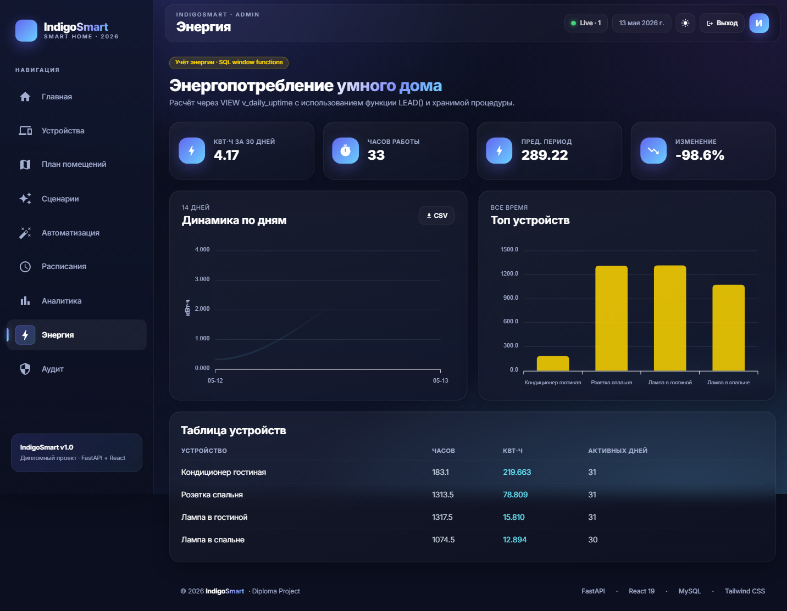
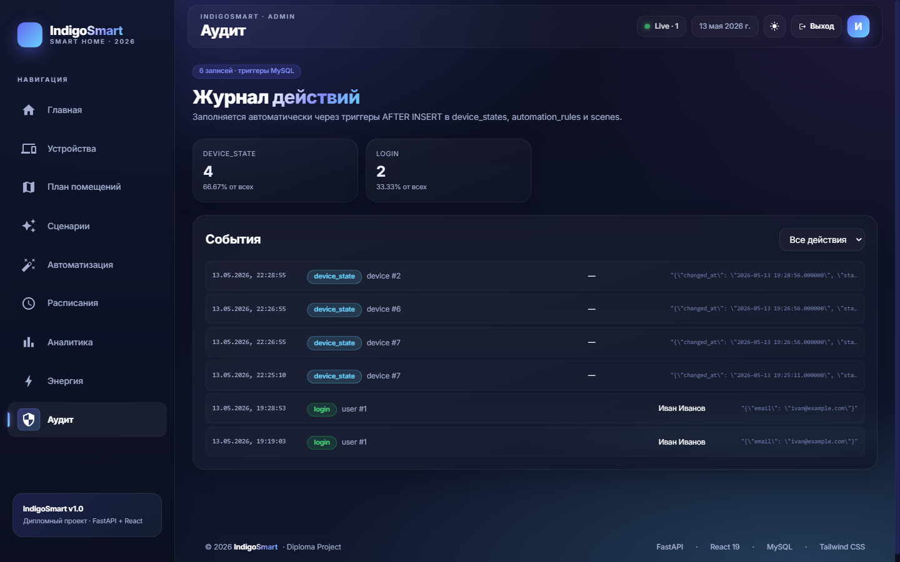

Дипломная симуляция выросла из 3-страничного дашборда в полноценную платформу управления умным домом с акцентом на работу с базами данных.
Полная реализация роадмапа, без пропусков. Каждая фича закончена end-to-end: БД → бэкенд → UI.
JWT + bcrypt + роли admin/user. Защищены все мутации. /auth/register, /login, /me
APScheduler генерирует показания каждые 30 сек. sin-волна по часам, шум, вероятностное переключение
/ws/updates · ConnectionManager · события симулятора, правил, сценариев push-уведомления
Таблицы scenes + scene_actions, /scenes/{id}/run применяет batch. UI-конструктор
IF-THEN правила с операторами > < = motion, cooldown, журнал срабатываний, фоновый воркер
VIEW v_daily_uptime с LEAD() window function, хранимая процедура calc_energy_for_period, экспорт
Полная история состояний, последние показания, кнопка управления, кнопка прогноза
Линейная регрессия + почасовая сезонность, MAE-метрика, кеширование в таблице forecasts
Таблица schedules с битовой маской дней, фоновый воркер APScheduler, UI с переключателями дней
3 триггера MySQL AFTER INSERT, JSON-детали, страница с фильтром, статистика по типам
SVG-план с pos_x/pos_y в devices, клик по устройству = переключение, цветовое кодирование
Переключатель в Navbar, сохранение в localStorage, отдельная палитра для светлой темы
StreamingResponse, /export/readings.csv и /export/events.csv с авторизацией
3 сервиса: MySQL + backend + frontend. Healthcheck, init-скрипты, named volume
tests/ с фикстурами, in-memory SQLite, тесты auth + scenes + security. 8 тестов, все зелёные
Демонстрация всех ключевых возможностей реляционных СУБД — отдельная глава в записке.
Фрагменты из миграции и роутеров — есть что показывать в записке.
Window function LEAD() для интервалов
CTE для сравнения периодов
Триггер AFTER INSERT
Хранимая процедура

Индикатор «Live · N» в Navbar считает события симулятора, правил и пользователей.
Иван Иванов · admin. Last login обновляется при каждом логине, кнопка «Выход» с очисткой токена.
Переключатель в Navbar. Сохраняется в localStorage между сессиями.

Колонки DECIMAL(5,2) в таблице devices, заполняются seed-данными.
Лампы загораются жёлтым с glow-эффектом, датчики выделены циан. Hover-tooltip с именем устройства.
Гостиная, Кухня, Спальня размечены полупрозрачными зонами.

Скрывает LEAD() и TIMESTAMPDIFF, отдаёт готовые kWh по дням.
calc_energy_for_period обрабатывает интервалы пересекающие границы окна корректно.
StreamingResponse — выгрузка показаний и событий с JOIN на устройства, комнаты, пользователей.

3 триггера автоматически заполняют audit_log. Приложение даже не знает — БД сама ведёт журнал.
JSON_OBJECT() в триггере сохраняет произвольные данные о событии — гибко и расширяемо.
SUM() OVER () считает процент каждого типа действия от общего количества.
FastAPI 0.135 · async REST API
SQLAlchemy 2.0 · ORM + Core
PyMySQL · MySQL driver
python-jose · JWT
bcrypt · хеши паролей
APScheduler · фоновые задачи
Pydantic · валидация
MySQL 9.0 · InnoDB
14 таблиц, 4 VIEW
3 триггера, 1 stored proc
Window functions (LEAD, OVER)
CTE (WITH ...)
JSON columns + JSON_OBJECT()
ENUM, FK CASCADE / SET NULL
React 19 · SPA
React Router 6
Tailwind CSS
ApexCharts · графики
WebSocket hook
JWT в localStorage
10 страниц UI
APScheduler · tick каждые 30 сек
sin-волна по часам суток
Гауссов шум для реалистичности
Бернулли для motion-сенсоров
Случайные переключения 5%/тик
pytest + httpx + sqlite
8 тестов · все зелёные
Docker compose
3 сервиса с healthcheck
Init-скрипты схемы + миграция
Линейная регрессия (МНК)
+ почасовая сезонность
MAE-метрика на трейне
Кеш прогнозов в forecasts
Без внешних библиотек ML
| Группа | Метод · Путь | Описание |
|---|---|---|
| Auth | POST /auth/register · /login · /logout, GET /me | JWT-аутентификация с ролями |
| Devices | GET /devices · /rooms · /devices/{id}, PUT /devices/{id}/state | CRUD устройств, изменение состояний (auth required) |
| Sensors | GET /sensor-readings | Последние 50 показаний всех датчиков |
| Dashboard | GET /dashboard | Сводка KPI для главной |
| Analytics | GET /analytics/* (7 эндпоинтов) | Аналитика по температуре, движению, активности, типам |
| Scenes | CRUD /scenes, POST /scenes/{id}/run | Batch-операции над устройствами |
| Automation | CRUD /rules, GET /rules/log | Правила IF-THEN с журналом срабатываний |
| Schedules | CRUD /schedules | Регулярные включения с маской дней недели |
| Energy | GET /energy/daily · /by-device · /period · /summary | SQL window functions + stored procedure |
| Forecast | POST /forecast/generate/{id}, GET /forecast/{id} | ML-прогноз с кешированием в БД |
| Audit | GET /audit · /audit/stats | Журнал, заполняется триггерами |
| Simulator | GET /state, POST /start · /stop | Управление симулятором |
| Export | GET /export/readings.csv · /events.csv | Streaming CSV |
| WebSocket | WS /ws/updates | Real-time push событий |
smart-app/ (backend)
smart-board/ (frontend)
Реализованы все 15 идей. Особый фокус — на возможностях MySQL: триггеры, views с window-функциями, хранимая процедура, JSON-колонки, CTE, ENUM, каскадные FK, композитные индексы.
Готовые главы: «Аутентификация и роли», «Симуляция IoT», «Подсистема автоматизации», «Энергоучёт через SQL window functions», «ML-прогноз», «Журнал действий через триггеры»
Live-демо: запускается симулятор → графики обновляются в реальном времени → срабатывает правило автоматизации → событие фиксируется в audit_log через триггер MySQL
Дополнить пояснительную записку главами под новые фичи (могу сгенерировать), сделать второй проход скриншотов, провести репетицию демо
Открой http://localhost:3000 — войди как ivan@example.com / demo123.